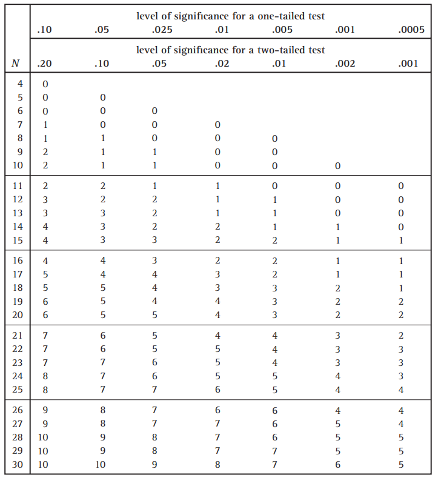

3 Week 6 - group_by and summarise
In this week’s lab we will be recapping some of the commands you learnt in week 3 - group_by() and summarise() - and exploring some of the properties of the binomial distribution using the Sign Test. Please ensure you do the pre-lab work before coming to class.
3.1 Pre-lab work
3.1.1 Online tutorials
Complete the online tutorial for working with these commands. These tutorials use a web-based version of R that will allow you to enter commands, and also get hints and solutions to the problems. Once you’ve completed the tutorial, you can put what you’ve learnt in to practice in R Studio using the lab tasks below.
To access the tutorial click here: https://psylancs.shinyapps.io/Week_6_learnr/
3.1.2 R Studio prep work
In preparation for the lab tasks, please do the following things:
[Download the data file here]
Download the files location_music_Wk6.csv, Week_6_lab.R and Week_6_binomial.R.
Place these files in a suitable folder on the computer.
Within R Studio, navigate to that folder in the “Files” pane.
Select the “More” button and then “Set as Working Directory”
Recommended - create a new project in this folder (“File”, “New Project”, “Existing Directory”)
3.1.3 Conceptual prep work
A researcher conducts an experiment to find out if an anti-smoking advert changes the amount people smoke. He has people record the number of cigarettes they smoke for a week before watching the advert, and then for a week after watching the advert. The data are shown below:
| Participant | Before watching the advert | After watching the advert |
|---|---|---|
| 1 | 25 | 31 |
| 2 | 10 | 5 |
| 3 | 8 | 7 |
| 4 | 35 | 25 |
| 5 | 48 | 44 |
| 6 | 21 | 26 |
| 7 | 29 | 30 |
| 8 | 17 | 11 |
| 9 | 26 | 14 |
| 10 | 41 | 38 |
| 11 | 44 | 12 |
| 12 | 73 | 56 |
| 13 | 4 | 0 |
| 14 | 8 | 8 |
| 15 | 33 | 24 |
| 16 | 22 | 27 |
How many positive, negative, and zero differences are there?
What is the sample size that is applicable for the Sign Test?
What is the critical value in the Sign Test table?
What is the null-hypothesis?
Can we reject the null-hypothesis?
3.2 Lab Work
3.2.1 R Studio exercises - music preferences (Task 1)
Now that you have completed the online tutorials on group_by() and summarise(), it’s time to put those skills into practice with a new dataset. Open the “Week_6_lab.R” script (as detailed in the pre-lab work). This will load the tidyverse packages and read in the data. The data consist of the ratings you gave for 8 different musicians, from a score of 1 (Don’t like them) through to 5 (Love them!). People could give “no opinion”, which are coded as NA. So be sure to use na.rm = TRUE when computing your summary statistics.
Follow these steps to explore this dataset:
- Run the two lines of codes
library(tidyverse)anddata <- read_csv("location_music.csv") - Use
summary()to get an overview of the data - View the responses to nominal variables with
count() - For an artist of your choice, calculate the mean and SD of their ratings.
- Use
group_by()andsummarise()to see whether people’s home location changes their ratings for an artist of your choice. - What about conversation skills? Are those who think they have poor conversation skills more likely to prefer rock or pop music?
3.2.2 Exploring binomial distributions and the sign test (Task 2).
Download the “Week_6_binomial.R” script from the Moodle forum. This is a version of the “binomial program” that Tom used in his lecture this week. It allows you to set the size of the sample e, and generate the binomial probabilities of different results for that sample size. It then plots those probabilities as a column graph using geom_col(). The red line shows the “significance level” and allows you to see which events are “unusual” given the null hypothesis for the given sample size (i.e., which bars are below this line) and for a specified Type 1 error rate (alpha). The probabilities for the different results are also presented in blue.
Would a result of 3 positive and and 13 negative be deemed statistically significant at the 5% level? Use the script to generate this result and compare the graph to the appropriate number in the Sign Test table below.
Would the result be significant at the 1% level?
What does this tell you about setting the Type 1 error rate at 1%?
With a sample size of 12, use the Sign Test table below to note how many positive or negative results would be deemed “unusual” under the null hypothesis, at the 5%?
Run a sample of 12 in the script to check and compare your answer to 4.
For a sample of 8, what significance level (Type 1 error rate; alpha) would we need to set for a result of 2 out of 8 to be deemed statistically significant?
Why might this be a poor criterion for our Type 1 error rate?
3.2.3 The Sign Test table
